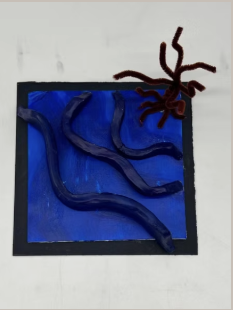
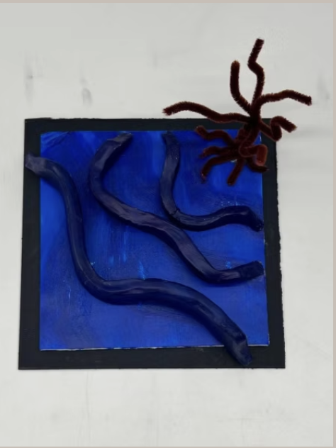
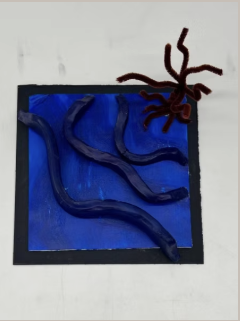

Date: November 2024
Type: 3D Model
Description: Inspired by the song "Albatross" by Fleetwood Mac, this 3D composition embodies the song's feelings of peace and tranquility, followed by the somber and soft tone. Incorporating the visual element and compositional principle of rhythm and motion, the composition experimented with air dry clay, pipe cleaner, and Bristol board.
